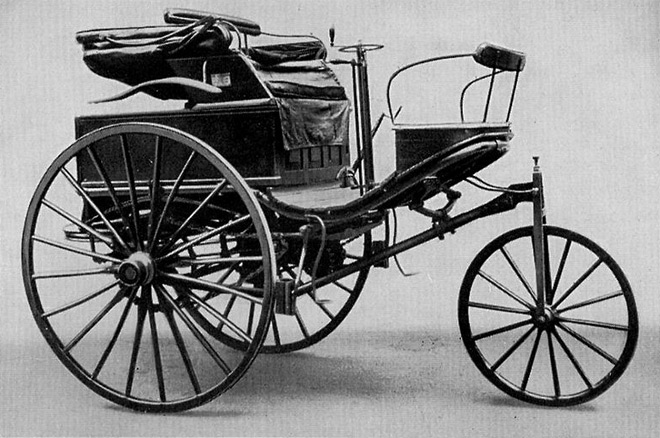
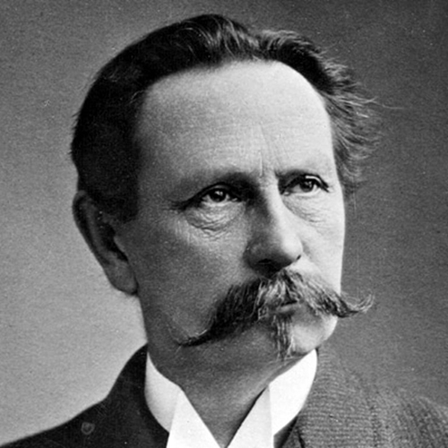
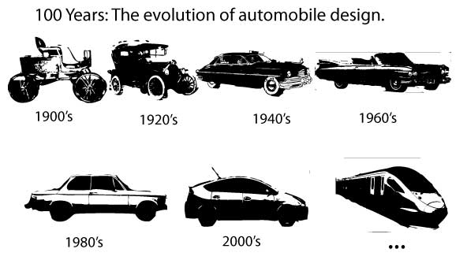
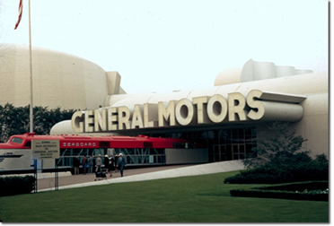
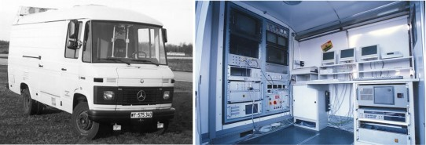
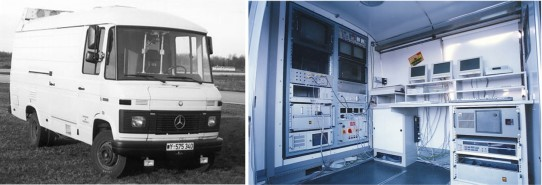
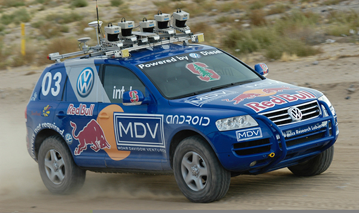
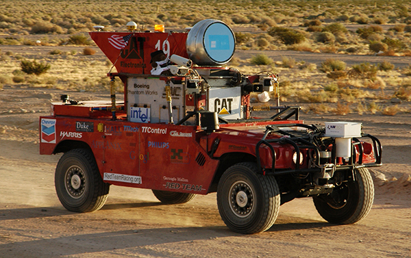

A Little History
1800s
The Beginning
  - In 1885, Karl Benz invented the first automobile
1900s
The Early Years
 

- General Motors presents the concept of driverless cars at the 1939 World's Fair
- 1984 & 1987 Carnegie Mellon University and Bundeswehr University Munich develop autonomous vans
2000s
The Jumpstart
 - In 2005, the US Derpartment of Defense issues the Grand DARPA Challenge to build self-driviing cars for $1 million dollars
Today's Human Drivers
- Car accidents kill about 34,000 people every year in the USA, and 1.2 million around the world.
- There are 2.6 million people injuried in 1.8 million injury accidents in the USA in a typical year, and around 6 million total accidents. There are 50 million injuries worldwide.
- The NHTSA estimates the total cost to society of accidents at around 230 billion dollars, around 2.5% of the GDP. Expressed per mile driven, it's about 8 cents/mile -- more than the cost of gasoline in a highly efficient car.
- Studies suggest that 40% of fatal accidents involve drunk driving and that 80% of all accidents are the result of driver inattention.
- Traffic congestion, caused by more than just accidents, wastes from 4 to 8 billion hours of people's time each year, and results in the burning of 6 billion gallons of extra fuel
Upsides |
Downsides |
| - Fully Autonomous | - Bugs |
| - Save Lives | - Hackers |
| - Solves parking, congestion | - Privacy |
| - Truly enables alternative fuels | - Unemployment |